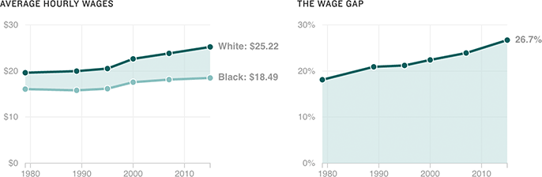

A Widening Gap Between White, Black Wages
A new study from the Economic Policy Institute found that average wages for black workers were 26.7 percent lower than those for white workers in 2015 — up 8.6 percentage points from 1979.
